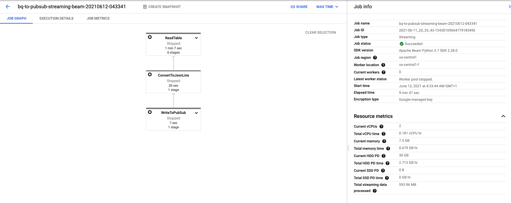
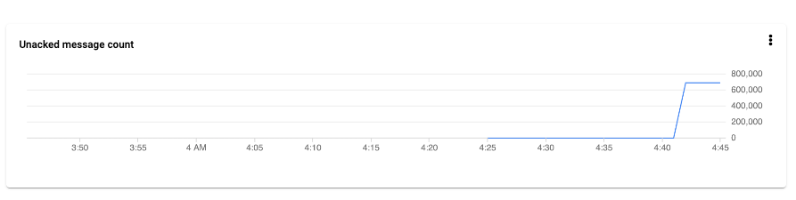
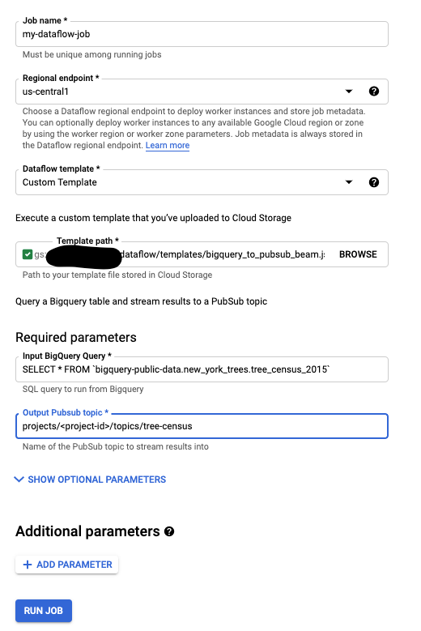

Reverse ETL the process of moving data from a data warehouse into third party systems/internal tools to make data operational. The major use-case for reverse ETL is Operational Analytics which refers to feeding insights from analytics to business teams in their usual workflow, so they can make more data-informed decisions. Another use-case I have found it really useful for is offloading heavy computations to the data warehouse.
This article explores how to build an efficient pipeline to get data out of BigQuery into operational systems.
You might wonder why not use the BigQuery APIs directly from the required service? Well, that could work for lighter workloads. With heavier workloads, you don’t really want to get into writing application logic to pull large amounts of records.
Apache Beam
Apache Beam is an open source, unified model for defining both batch and streaming data-parallel processing pipelines. Using one of the open source Beam SDKs, you build a program that defines the pipeline. The pipeline is then executed by one of Beam’s supported distributed processing back-ends, which include Apache Flink, Apache Spark, and Google Cloud Dataflow. More..
To illustrate, we are read a table from the BigQuery public dataset.
The table is called bigquery-public-data:new_york_trees.tree_census_2015 which contains NYC tree street data.

I wrote a reusable python dataflow flex template here. This template creates a pipeline that reads records from a table in BigQuery and publishes them to a Pub/Sub topic. It takes in two parameters
input_query- BigQuery SQL query to be executed.output_topic- Output Pubsub topic to write results to.
After setting up the template on a GCP project, we can run the pipeline by doing the following
PROJECT=<project-id>
BUCKET=<bucket-name>
REGION=us-central1
TEMPLATE_PATH="gs://$BUCKET/dataflow/templates/bigquery_to_pubsub_beam.json"
gcloud dataflow flex-template run "bq-to-pubsub-streaming-beam-`date +%Y%m%d-%H%M%S`" \
--template-file-gcs-location "$TEMPLATE_PATH" \
--parameters input_query="SELECT * FROM \`bigquery-public-data.new_york_trees.tree_census_2015\`" \
--parameters output_topic="projects/$PROJECT/topics/tree-census" \
--region "$REGION"
Dataflow Job Metrics.

Records published in a short span of time.

Alternatively, Google Cloud allows you to create jobs from templates using the cloud console.

Summary
We have taken an approach originally meant for doing ETL and applied it to a reverse scenario. An advantage of using templates is its re-usability. We can take this template and use it for different jobs that take this approach. You can conveniently start a job using the Cloud Console UI or schedule it programmatically using your favorite orchestration tool e.g. Airflow or even communicating directly with the Google APIs.